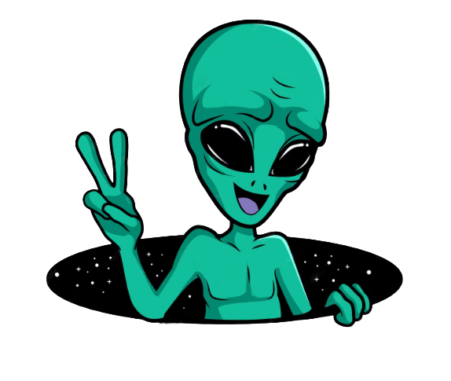

Currently, I'm a senior at ASU working towards my degree in Human Systems Engineering.
One of my biggest professional influences came from four years managing 100+ staff at one of the largest non-profit zoos in the country. Welcoming nearly 1.4 million guests annually meant owning the full guest journey.
It taught me how to read people, communicate under pressure, and care deeply about cultivating a world-class experience at every touchpoint.
Little did I know I was doing UX long before I even knew what UX was. Now I get to do it on purpose! Turns out the zoo was just my first usability test.
More about me →
I'm looking to grow, learn, and create work that matters.
If you're searching for someone with fresh eyes and a passion for perfection.